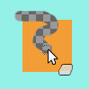

A borracha é usada para remover áreas de cores da camada ativa ou de uma seleção dessa camada. Se a ferramenta de borracha é usada em algo que não suporta transparência (um canal de máscara de seleção, uma máscara de camada, ou o fundo de uma camada que não tenha um canal alfa), apagar vai ser equivalente a usar a ferramenta de pincel (ou lápis) usando a cor de Fundo, que está selecionada na Caixa de ferramentas. Numa camada com canal alfa, a borracha produz transparência total ou parcial, dependendo das configurações das opções da ferramenta. Seu uso é intuitivo, e em termos técnicos, ela funciona como um pincel para o canal alfa. Você pode aprender como adicionar um canal alfa à sua camada em Seção 7.36, “Adicionar canal alfa”.
Figura 14.63. Borracha e canal alfa

A cor de fundo é branco. A imagem não possui canal alfa. A borracha (com opacidade de 100%) mostra a cor do fundo.

A imagem tem um canal alfa. A borracha mostra transparência.
Se você precisa apagar completamente algum grupo de pixels, sem deixar nenhum traço por trás do seu conteúdo anterior, então você deve marcar a caixa "Borda dura" nas opções da ferramenta. Caso contrário, a substituição de sub-pixels do pincel irá causar um apagamento parcial das bordas da pincelada, mesmo que use um pincel com bordas duras. Esta opção de “Borda dura” faz a borracha funcionar tanto como a ferramenta de pincel (sem borda dura), ou como o lápis.
![[Dica]](images/tip.png)
|
Dica |
|---|---|
|
Se você usa o GIMP a partir de um tablet (mesa digitalizadora), então você pode achar conveniente tratar a ponta oposta da sua caneta como uma borracha. Para fazer isso, tudo o que você precisa fazer é clicar com a ponta oposta no ícone de borracha na caixa de ferramentas. Já que cada ponta da caneta é reconhecida como um dispositivo em separado, com isso a ponta oposta continuará a funcionar como uma borracha enquanto você não selecionar uma ferramenta diferente. |
Existem várias formas para ativar a ferramenta:
-
Através do menu da janela de imagem em → → ;
-
Ícone da ferramenta de clonagem na caixa de ferramentas
-
o usando o atalho de teclado Shift+D.
Veja Seção 3.1, “Características em comum” para uma descrição de modificadores de tecla que possuem o mesmo efeito em todas as ferramentas de desenho.
- Ctrl
-
Para a borracha, pressione a tecla Ctrl e a coloque no modo “seletor de cor”, para selecionar a cor de qualquer pixel que clicar. Entretanto, diferente de outras ferramentas de pincel, a borracha define a cor de fundo ao invés da cor de frente. Isso é mais útil, já que em trabalhos que não suportem transparência, a borracha substitui as áreas apagadas com a cor de fundo atual.
- Alt
-
Para a borracha, pressionar a tecla Alt muda para o modo “anti-borracha”, como descrito na área inferior da seção de opções da ferramenta. Perceba que em alguns sistemas, a tecla Alt em conjunto com o mouse é capturada pelo gerenciador de janelas. Caso isso aconteça com você, pode usar o atalho Alt+Shift no lugar de só Alt.

Normally, tool options are displayed in a window attached under the Toolbox as soon as you activate a tool. If they are not, you can access them from the main menu through → → which opens the option window of the selected tool. The available tool options can also be accessed by double clicking the corresponding tool icon in the Toolbox.
- Modo, Pincel, Tamanho, Proporção, Ângulo, Espaçamento, Dureza, Força, Dinâmicas, Opções de dinâmicas, Aplicar espalhamento, Pincelada suave, O tamanho do pincel - curva de esmaecimento, Incremental
- Veja Opções em comum das ferramentas de pintura para uma descrição das opções da ferramenta que são aplicáveis a todas as ferramentas de pintura.
- Opacidade
-
O controle de opacidade, apesar de seu nome, que é comum com as outras ferramentas de pintura, determina a “força” da ferramenta. Portanto, quando você apaga uma camada com um canal alfa, quanto maior a opacidade que você usa, mais transparente ficará!
- Borda dura
-
Essa opção evita que se apague parcialmente as bordas da pincelada. Veja acima.
- Anti-borracha
-
A opção de anti-borracha da ferramenta borracha pode “desapagar” áreas de uma imagem, mesmo que ela esteja completamente transparente. Essa opção só funciona quando usada em camadas com canal alfa. Além da caixa de selecionar nas opções da ferramenta, ela também pode ser ativada a qualquer momento pressionando a tecla Alt (ou, caso a tecla Alt estiver bloqueada pelo gerenciador de janelas, basta pressionar Alt+Shift).
![[Nota]](images/note.png)
Nota Para entender como a “anti-borracha” funciona, você precisa entender que apagar (ou tambem editar->cortar) afeta apenas o canal alfa, e não os canais RGB que contém informações de imagem. Mesmo que o resultado seja completamente transparente, as informações de RGB continuam lá, você apenas não consegue vê-las. A anti-borracha aumenta o valor de alfa para que você possa ver as informações de RGB novamente. Outros meios no GIMP que afetam o canal Alfa também podem tornar a informação de cor visível novamente — um exemplo seria usar a ferramenta de Cores>Curvas no canal Alfa, e posiciona a âncora de canto esquerdo em qualquer ponto diferente de 0.